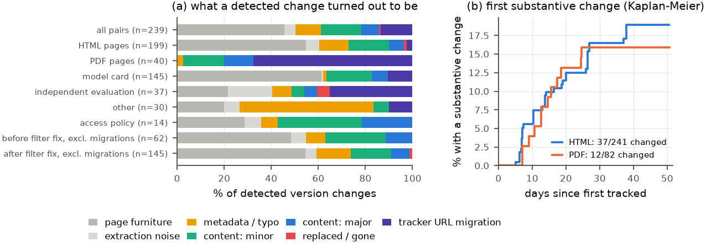
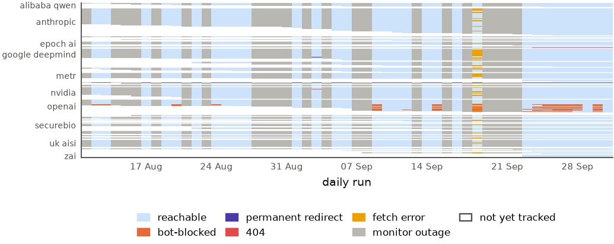

Watching AI model documentation:
what changes, what goes quiet, and what the watcher misses
cardtrack is a daily tracker of first-party model and system cards, access policies and independent evaluations of frontier AI models, with additions proposed by a large language model (LLM) agent and audited by a human (systemcards.org). We analyse its first 7.3 weeks: 323 documents from 33 publishers, 594 stored versions and 17,203 link and content checks. Post-publication edits are real and worth tracking: 61 publisher-side version changes were substantive, among them 14 corrections of a stated number or fact (one propagated through 5 OpenAI documents), scope changes to access policies, and score edits and removals with no change log; 49 documents (15.2%) changed substantively within the window. The cost of finding them is that 58.0% of detected changes were page furniture or extraction artefacts, and apparent deletions must be checked against the raw capture before they are believed. Hard loss is rare: 2 of 346 documents ever returned a 404, one of them for good, too few to estimate a link-rot rate over this window. The quieter failure is a page that keeps answering HTTP 200: two pages served a redirect stub for at least 17 days, visible only to content fingerprinting until the publisher added real redirects. A host-side fault cost 41.5% of the daily runs their checks, none since 22 September (Appendix B), so the change counts above are lower bounds and their detection dates run late.
Setting and data
Each daily run probes every tracked URL (link check), re-fetches a 15 % rotation of documents and compares a text fingerprint that ignores known page furniture such as download counters, sidebars and footers (content check), diffs publisher index pages for new links, and then lets a sandboxed LLM agent propose additions through a deterministic validator. A supervised backfill on 9 August 2026 seeded 196 documents; the snapshot covers 53 runs from 11 August to 29 September 2026, during which 159 more were discovered. The only continuous public log of edits to such documents we know of is the Midas Project’s hand-curated Watchtower (The Midas Project 2026); this study is fingerprint-based and model-centred.
What changes

Of the 239 consecutive version pairs in the database, 32 (13.4%) are the tracker’s own doing, so the diff compares two captures, not two revisions: canonical URLs migrated on 31 August from announcement pages to full PDFs, and first captures of a redirect target after a recorded move. The remaining 207 publisher-side pairs were classified by reading the text diffs (Figure 1a): 58.0% were Hugging Face download counters, evaluation-widget rows, footers or PDF re-extraction artefacts, 29.5% changed the document’s content and 8.7% did so substantially. On 31 August the fingerprint was also recomputed to ignore known furniture. This cut the per-check change-flag rate from 49.2% to 17.6% while the number of substantive pairs found did not fall (23 before, 38 after, over a longer window), so precision per flag rose from about 13.1% to 24.1%. The before side is incomplete: 107 versions that the changelog records as written are no longer in the database, 106 of them from before the recompute, so pairs of every kind are missing there. The remaining leak is evaluation-widget rows that end in a score, which the bullet-anchored patterns do not match. In document terms, 49 of 323 tracked documents (15.2%) changed substantively during the window, an estimated 16.5% of HTML and 15.9% of PDF documents within 30 days of tracking; the two curves in Figure 1b are not distinguishable at this sample size.
The substantive changes are the reason to run a tracker at all (Table 1; Appendix A lists all 61 with URLs). Of the publisher-side pairs, 14 corrected a stated number or fact, 13 touched an evaluation number and 24 touched a safety, risk or mitigation section. Three patterns recur (Appendix A ids in brackets). First, some corrections come with dated change logs, mostly at OpenAI: one corrected number propagated with its change log into 5 OpenAI documents that quote it as a baseline (A4, A11, A14, A19, A22), and most recently the GPT-6 Astra system card gained an appendix covering GPT-6 Sol and Luna and corrected Astra’s HealthBench results after an evaluation misconfiguration, with dated entries (A52); xAI (A12) and Anthropic (A44) each added one dated log. Second, edits without a change log exist: an NVIDIA card revised a tool-calling score downward and dropped its research-only use restriction with no note (A6); OpenAI removed a prompt-response table in which GPT-5.6 Cyber, alone of four configurations, answered a request for a Keychain-bypass and Chrome-cookie-decryption tool (A27), and deleted a named launch partner from an access-programme page (A40). Third, documents change scope: OpenAI rebuilt its Daybreak cyber-access tiers to add GPT-6 Sol, Luna and Astra and to require extra approval for GPT-5.6-Cyber (A54); Anthropic’s cyber-safeguards page now excludes Opus 5.5 and Sonnet 5.5 (A59); NVIDIA’s Cosmos 3 cards were each cut back to a single model (A50, A51); and inclusionAI added a “training content summary” linking a public training-data statement to several of its cards (A53, A55, A56, A57, A58). A caution the other way: the previous edition found that apparent deletions of Anthropic footnotes were extractor artefacts. The publisher had wrapped its footnotes in an element whose class name contains “footer”, which the boilerplate remover discards, while the raw HTML still held every footnote. The extractor has since been fixed and twelve classified versions, the artefacts among them, were deleted from the database; one new footnote deletion in the same position is treated as an artefact until it is checked against the raw capture. A fingerprint tracker cannot tell disclosed from undisclosed edits, or edits from extraction bugs, but it produces the diff that lets a human tell.
| Date | Publisher: document | Kind | What changed (classifier summary) |
|---|---|---|---|
| 2026-08-19 | nvidia: NVIDIA-Nemotron-3.5-Lightning-30B-A3... | no change log | Added Hardware Matrix, deployment table, SGLang recipes and speculative-decoding flags. Dropped RTX 5090 from supported hardware and removed the runtime thinking-budget claim. |
| 2026-08-22 | xai: Model Card: Grok 4.6 | dated correction | Revision 2026-08-17 adds changelog, PartBench, DeepSearchQA, BixBench, KernelBenchInternal v1.1, renumbered sections; corrects HackerBench, self-harm, MASK, LAB scores. |
| 2026-08-25 | tencent hunyuan: EVIE-Preview-4.5B Model Card | no change log | Card rewritten around ’Rank #1’ claims: new ViDoRe V3 table with 1,792-token tier (65.36), revised V1+V2 and per-domain scores, Index Cost section. |
| 2026-08-26 | nvidia: NVIDIA Nemotron Parse 2.0 Model Card | licence | License changed from NVIDIA Open Model License Agreement to OpenMDW-1.1; third-party software notice added; Quick Start and vLLM instructions rewritten. |
| 2026-09-06 | palisade research: Language Models Can Autonomously Hac... | moved behind 200 | Blog URL now serves a meta-refresh stub ’Redirecting... Click here’ pointing to palisaderesearch.org/research/self-replication; article text no longer captured. |
| 2026-09-06 | palisade research: Technical Report: Shutdown Resistanc... | moved behind 200 | Page body (shutdown-resistance-on-a-robot report: 3/10 physical, 52/100 simulated trials) replaced by a two-line redirect stub: Redirecting... Click here if you are not redirected. |
| 2026-09-12 | openai: GPT-6 Astra System Card | major edit | Adds Sept 9 change log; renames 8.7 to Verbalized Metagaming and Oversight Gaming, drops metric plot, adds CoT examples; Alignment section adds generalization caveats. |
| 2026-09-24 | openai: GPT-6 Astra System Card | dated correction | Added approx. 35-page Appendix A covering GPT-6 Sol and Luna. Corrected Astra HealthBench scores after a misconfiguration. Added updated alignment-eval results. Three new changelog entries dated Sept 22. |
| 2026-09-29 | google deepmind: Gemini 3.8 Audio (Live, Live Extende... | no change log | Card expanded to add Gemini 3.8 Flash TTS and Flash-Lite TTS plus Live Avatar video output; added child safety evaluations; frontier safety statement extended; Vertex AI renamed. |
What goes quiet
Excluding host-side outage runs and the 86 probes that never reached a server leaves 8,259 valid link checks over 346 documents (33.6 document-years, including documents later removed from the corpus), of which 97.3% succeeded. Hard loss is rare: 2 documents ever returned a 404 (0.06 per document-year). The monitor declared one of them dead after three consecutive 404s, a FAR.AI evaluation of the cyber safeguards of Alibaba’s Qoder agent (Qwen3.8-Max); the other was a slug typo that the publisher fixed with a redirect. Two cases cannot give a reliable rate over 7.3 weeks, but they are not out of line with published baselines for young pages: Pew found 8 % of pages under one year old inaccessible (Pew Research Center 2024), deep links in the Wayback corpus have a median lifetime of 1.3 years (Garg et al. 2024), and 1 to 4 % of web references in scholarly articles from 2012 were already rotten when checked (Klein et al. 2014). Moves are more common: 6 documents moved via permanent redirect (0.18 per document-year: site restructures, a trailing slash, the typo fix and the soft-gone pages below). Bot blocking is the larger nuisance: 16 documents were refused with HTTP 403 at least once, 12 of them OpenAI documents on openai.com. For most of the window the blocks were intermittent (overall a median of 46.1% of later checks), consistent with rate-based bot detection, but in the last week most of the blocked OpenAI pages were refused in most runs; whether that reflects the site or a change on the tracker’s host is not known, and block rates depend on the fetch client’s fingerprint as much as on the site (Gundelach, Mühlhauser, and Herrmann 2026). This matters because OpenAI is also the publisher whose documents carried most of the dated corrections above. The quietest failures were invisible to the link checker: two pages kept returning HTTP 200 while their body became a two-line client-side redirect stub (meta refresh plus a canonical link to the new location), and only the content fingerprint noticed. For at least 17 days the link checker saw nothing, until the publisher replaced the stubs with real permanent redirects on 23 September and the monitor marked them moved (Table 3). This is the reference rot of Zittrain et al. (Zittrain, Albert, and Lessig 2014), the URL resolving while the content is gone, although here it was temporary because the publisher had moved rather than removed the content.
Discovery is fast
For the 80 documents published after the backfill, the median delay from publication to first tracking was 2.3 days and 85.0% were tracked within a week. Leads from index diffs and from the monitor’s own candidate queue were tracked within two days (median 1.3 to 1.5 days); free-form agent search took 4.8 days and manual submissions 14.5 days.
Limitations
The window is 7.3 weeks on one host with one fetch client: enough to measure short-run edit rates, not link rot, whose baselines are annual; block rates in the literature range from under 1 % for browser-like clients to 15 % for headless ones (Gundelach, Mühlhauser, and Herrmann 2026). Coverage was uneven: 41.5% of the daily runs lost their checks to a host-side fault (Appendix B), which stretched the content re-check interval’s tail to 18.0 days at the 90th percentile against an intended 6.7 days, and content changes are observed only when a document’s turn in the 15 % rotation comes up, so change dates lag true edit dates by up to a re-check interval and edits reverted between checks are missed. The instrument changed mid-window (URL migrations and the fingerprint recompute on 31 August). The classification was done by LLM sub-agents with a written taxonomy (189 pairs at high confidence, 48 at medium, 2 at low); it was spot-checked, not double-coded, categories at the boundary of “minor” and “metadata” are soft, and text extraction can drop page elements, so apparent deletions need a check against the raw capture. The corpus is curated by an allow-list and an agent, and the literature baselines cover different populations.
Future work
On the science: a longer horizon allows a hazard model of edit rates by publisher and document type; aligning detected edits with publishers’ change logs and with Watchtower’s disclosed and undisclosed tags would estimate the disclosed fraction; classifying every minted version in the pipeline would turn the appendix into a live feed. On the instrument: re-fetch every document daily instead of a 15 % rotation (the whole corpus is under 400 MB and the link probe already touches every URL), so edits are dated to the day; treat a body that collapses to a redirect stub as a soft 404 and re-point moved documents; keep the new footnote pre-clean under test and diff the raw capture alongside the extracted text so extractor regressions are never read as deletions; extend the furniture patterns to widget rows that end in a score; run on an always-on host.
Every substantive publisher-side change
Table 2 lists all 61 publisher-side version pairs classified as a content change (minor, major, or replaced), in order of detection, with the canonical URL and the stored version ids so the diff can be reproduced from the database (document_versions rows, text under data/text/). Detection dates lag the edit by up to one re-check interval. Table 3 lists the pages that went quiet behind an HTTP 200 and Table 4 the recorded moves.
| Id | Detected | Publisher | Document and canonical URL | Category (flags), versions | What changed (classifier summary) |
|---|---|---|---|---|---|
| Id | Detected | Publisher | Document and canonical URL | Category (flags), versions | What changed (classifier summary) |
| A1 | 2026-08-17 | nvidia | Cosmos 3: Omnimodal World Models for Physical AI — Cosmos3-E... https://huggingface.co/nvidia/Cosmos3-Edge |
minor v55v273 |
Both code examples change inference defaults: num_inference_steps 50 to 20, guidance_scale 5.0 to 6.0, flow_shift 3.0 to 12.0. Plus download count. |
| A2 | 2026-08-19 | inclusion ai | Ling-3.0-tiny Model Card https://huggingface.co/inclusionAI/Ling-3.0-tiny |
minor (correction) v219v283 |
Activated parameter count changed from 1.3B to 1.4B (Non-emb 1.14B) in four places: intro, overview, MoE bullet, evaluation text. Download counter is furniture. |
| A3 | 2026-08-19 | nvidia | NVIDIA-Nemotron-3.5-Lightning-30B-A3B-BF16 Model Card https://huggingface.co/nvidia/NVIDIA-Nemotron-3.5-Lightning-30B-A3B-BF16 |
major v218v282 |
Added Hardware Matrix, deployment table, SGLang recipes and speculative-decoding flags. Dropped RTX 5090 from supported hardware and removed the runtime thinking-budget claim. |
| A4 | 2026-08-20 | openai | GPT-5.6 — August Updates https://deploymentsafety.openai.com/gpt-5-6-august-update/gpt-5-6-august-update.pdf |
minor (score, safety, correction) v10v310 |
Dated Change log added: GPT-5.5 pass@4 on hard-negative protein binding corrected 0.4% to 1.48% (earlier value was pass@1); table updated; rest is reflow. |
| A5 | 2026-08-20 | nvidia | Nemotron-Labs-Audex Model Card (30B-A3B and 2B) https://huggingface.co/nvidia/Nemotron-Labs-Audex-30B-A3B |
minor (correction) v81v316 |
Instruct-mode prefix now task-specific (text vs audio); notes the chat template targets audio, so reported text instruct results need a hand-built prompt. |
| A6 | 2026-08-20 | nvidia | NVIDIA NemotronLabs VoiceChat 11B Model Card https://huggingface.co/nvidia/NVIDIA-NemotronLabs-VoiceChat-11B |
minor (score, license, correction) v82v317 |
The research-purposes-only use statement was deleted and the tool-calling argument accuracy was revised from 44.2% to 42.2%. |
| A7 | 2026-08-20 | metr | Expenditure Horizon: Measuring Optimization Ability, with an... https://metr.org/blog/2026-07-21-expenditure-horizon/ |
major (score, safety, scope) v137v322 |
Added approx. 200 lines: human returns on NanoGPT (approx. $2,500 per 1%), agent runs for six models with expenditure horizons $600-$3,300, maintainer mergeability review, appendices. |
| A8 | 2026-08-20 | metr | Many SWE-bench-Passing PRs Would Not Be Merged into Main https://metr.org/notes/2026-03-10-many-swe-bench-passing-prs-would-not-be-merged-into-main/ |
minor v145v324 |
Added Summary paragraph (grader overstates time horizon; trend unsupported) and seven methodological footnotes (Epoch harness lag, 2% corrupted patches, 31 pilot patches, blinding caveats). |
| A9 | 2026-08-22 | poolside | Laguna S 2.1 https://huggingface.co/poolside/Laguna-S-2.1 |
minor (license) v254v345 |
Added paragraph stating Laguna S 2.1 is released under OpenMDW-1.1, fully permissive, with paid support/optimization/indemnification options; counters changed. |
| A10 | 2026-08-22 | poolside | Laguna XS 2.1 https://huggingface.co/poolside/Laguna-XS-2.1 |
minor (license) v255v346 |
Added paragraph stating release under OpenMDW-1.1 (fully permissive, commercial use allowed) with paid support and indemnification options. Counters and widget reorder incidental. |
| A11 | 2026-08-22 | openai | GPT-5.6 System Card https://deploymentsafety.openai.com/gpt-5-6/gpt-5-6.pdf |
minor (score, safety, correction) v7v348 |
New Aug 19, 2026 change-log entry and table fix: GPT-5.5 pass@4 on hard-negative protein binding corrected 0.4% to 1.5% (was pass@1). Rest is page-number reflow. |
| A12 | 2026-08-22 | xai | Model Card: Grok 4.6 https://media.x.ai/v1/website/card-4p6-4cd2dc57.pdf |
major (score, safety, correction) v236v357 |
Revision 2026-08-17 adds changelog, PartBench, DeepSearchQA, BixBench, KernelBenchInternal v1.1, renumbered sections; corrects HackerBench, self-harm, MASK, LAB scores. |
| A13 | 2026-08-24 | google deepmind | Gemini 3.7 Flash Model Card https://storage.googleapis.com/deepmind-media/Model-Cards/Gemini-3-7-Flash-Model-Card.pdf |
minor (safety) v277v358 |
Frontier Safety section changed from ’FSF Report will be published shortly’ to ’is available here’. |
| A14 | 2026-08-24 | openai | GPT-5.6 Preview System Card https://deploymentsafety.openai.com/gpt-5-6-preview/gpt-5-6-preview.pdf |
minor (score, safety, correction) v214v360 |
Added dated Change log (Aug 19, 2026) and inline note correcting GPT-5.5 pass@4 on hard-negative protein binding from 0.4% to 1.5%; table updated. |
| A15 | 2026-08-25 | tencent hunyuan | UI-Mate-27B Model Card https://huggingface.co/tencent/UI-Mate-27B |
major (score, scope) v280v376 |
Demonstration-guided mode (description, results table, pipeline) removed and assigned to a separate UI-Mate-democua-27B checkpoint in a new checkpoint table. |
| A16 | 2026-08-25 | tencent hunyuan | EVIE-Preview-4.5B Model Card https://huggingface.co/tencent/EVIE-Preview-4.5B |
major (score) v281v377 |
Card rewritten around ’Rank #1’ claims: new ViDoRe V3 table with 1,792-token tier (65.36), revised V1+V2 and per-domain scores, Index Cost section. |
| A17 | 2026-08-25 | nvidia | NVIDIA-Nemotron-3.5-Lightning-30B-A3B-BF16 Model Card https://huggingface.co/nvidia/NVIDIA-Nemotron-3.5-Lightning-30B-A3B-BF16 |
minor v282v378 |
Added one sentence in the training-data section pointing to the Public Summary of Training Content. Download counter and eval-widget rows (Terminal-Bench 2.1 24.58) are furniture. |
| A18 | 2026-08-25 | inclusion ai | Ling-3.0-tiny Model Card https://huggingface.co/inclusionAI/Ling-3.0-tiny |
minor (correction) v283v379 |
Activated parameter count reverted from 1.4B (Non-emb 1.14B) back to 1.3B in the same four places. Total 7.9B unchanged. |
| A19 | 2026-08-25 | openai | GPT-5.5 System Card https://deploymentsafety.openai.com/gpt-5-5/gpt-5-5.pdf |
major (score, safety, correction) v8v387 |
Change log dated August 19, 2026 added; GPT-5.5 pass@4 on hard-negative protein binding corrected from 0.4% to 1.48%; page numbers shifted. |
| A20 | 2026-08-26 | nvidia | NVIDIA Nemotron 3 Nano Omni 30B-A3B Reasoning Model Card https://huggingface.co/nvidia/Nemotron-3-Nano-Omni-30B-A3B-Reasoning-BF16 |
minor v76v398 |
One line added to the dataset section pointing to a Public Summary of Training Content. Remaining changes are download and Spaces counters. |
| A21 | 2026-08-26 | nvidia | NVIDIA Nemotron Parse 2.0 Model Card https://huggingface.co/nvidia/NVIDIA-Nemotron-Parse-2.0 |
major (license) v84v406 |
License changed from NVIDIA Open Model License Agreement to OpenMDW-1.1; third-party software notice added; Quick Start and vLLM instructions rewritten. |
| A22 | 2026-08-27 | openai | GPT-Rosalind-5.5 System Card https://deploymentsafety.openai.com/gpt-rosalind-5-5/gpt-rosalind-5-5.pdf |
minor (score, safety, correction) v31v419 |
Change log (Aug 19, 2026) added: GPT-5.5 pass@4 on hard-negative protein binding corrected from 0.4% to 1.48%; table updated; rest repagination. |
| A23 | 2026-08-28 | google deepmind | Gemini Omni Flash Model Card https://storage.googleapis.com/deepmind-media/Model-Cards/Gemini-Omni-Flash-Model-Card.pdf |
minor (scope) v36v432 |
Marked Last Updated August 2026; card now also covers Gemini Omni 1.1 Flash; removed paragraph promising T2VA/I2VA/R2VA/editing/image-gen evaluations at API rollout. |
| A24 | 2026-09-03 | inclusion ai | UI-Venus-2-9B https://huggingface.co/inclusionAI/UI-Venus-2-9B |
major (score, license, safety, correction) v429v479 |
Result tables rebuilt with baselines and new benchmarks; safety table now OSHarm+OSBlind; Release Status added, license pending; web claim cut to 4,000+ domains. |
| A25 | 2026-09-03 | google deepmind | Gemini 3.6 Flash Model Card https://storage.googleapis.com/deepmind-media/Model-Cards/Gemini-3-6-Flash-Model-Card.pdf |
minor v14v480 |
Intended Usage list adds ’complex video reasoning’ and replaces ’multi-week enterprise processes’ with ’enterprise workflows’. No other section changed. |
| A26 | 2026-09-03 | google deepmind | Gemini 3.5 Flash-Lite Model Card https://storage.googleapis.com/deepmind-media/Model-Cards/Gemini-3-5-Flash-Lite-Model-Card.pdf |
minor v439v481 |
Benefit and Intended Usage now lists complex video reasoning among use cases; one sentence split. Nothing else changed. |
| A27 | 2026-09-03 | openai | Expanding Daybreak as the Cyber Defense Window Narrows https://openai.com/index/expanding-daybreak-as-the-cyber-defense-window-narrows/ |
minor (safety) v250v482 |
Removed the macOS Keychain/Chrome cookies prompt-response comparison table and a customer testimonial. Refusal-rate, ExploitGym, ExploitBench text unchanged. |
| A28 | 2026-09-05 | inclusion ai | Ling-3.0-flash Model Card https://huggingface.co/inclusionAI/Ling-3.0-flash |
minor v186v491 |
vLLM install instructions switched from the inclusionAI vllm-ling-v3 fork to upstream vllm-project/vllm. HF use-instructions block, counters and eval-widget rows are furniture. |
| A29 | 2026-09-05 | nvidia | NVIDIA-Nemotron-3-Ultra-550B-A55B-BF16 Model Card https://huggingface.co/nvidia/NVIDIA-Nemotron-3-Ultra-550B-A55B-BF16 |
minor v270v494 |
Training-data section gained one line pointing to a Public Summary of Training Content; rest is HF download/Spaces counters and eval-widget reordering. |
| A30 | 2026-09-05 | nvidia | Cosmos 3: Omnimodal World Models for Physical AI — Cosmos3-S... https://huggingface.co/nvidia/Cosmos3-Super |
minor v54v496 |
One sentence added to the training-data section pointing to a Public Summary of Training Content; download counter changed. |
| A31 | 2026-09-05 | nvidia | NVIDIA-Nemotron-3-Super-120B-A12B-BF16 Model Card https://huggingface.co/nvidia/NVIDIA-Nemotron-3-Super-120B-A12B-BF16 |
minor v53v495 |
Spec table gains Speculative Decoding row (MTP head, MTPv2 separate checkpoint); training section links NVIDIA’s Public Summary of Training Content. |
| A32 | 2026-09-05 | nvidia | Cosmos 3: Omnimodal World Models for Physical AI — Cosmos3-E... https://huggingface.co/nvidia/Cosmos3-Edge |
minor v273v497 |
Added ’Update August 25, 2026’ notice that checkpoint, runtime defaults, examples and benchmarks were updated; link to Public Summary of Training Content. |
| A33 | 2026-09-05 | openai | OpenAI and Hugging Face partner to address security incident... https://openai.com/index/hugging-face-model-evaluation-security-incident/ |
minor (safety) v104v499 |
Pending-review sentence replaced by an ’Update on August 26, 2026’ linking to published findings on the Hugging Face incident. |
| A34 | 2026-09-06 | palisade research | Language Models Can Autonomously Hack and Self-Replicate https://palisaderesearch.org/blog/self-replication |
replaced v194v508 |
Blog URL now serves a meta-refresh stub ’Redirecting... Click here’ pointing to palisaderesearch.org/research/self-replication; article text no longer captured. |
| A35 | 2026-09-06 | palisade research | Technical Report: Shutdown Resistance in Large Language Mode... https://palisaderesearch.org/blog/shutdown-resistance-on-robots |
replaced (safety) v195v509 |
Page body (shutdown-resistance-on-a-robot report: 3/10 physical, 52/100 simulated trials) replaced by a two-line redirect stub: Redirecting... Click here if you are not redirected. |
| A36 | 2026-09-06 | google deepmind | Gemini 3.7 Flash Model Card https://storage.googleapis.com/deepmind-media/Model-Cards/Gemini-3-7-Flash-Model-Card.pdf |
minor v441v513 |
Description adds ’support for agentic video understanding’; intended use cases add ’complex video reasoning’. |
| A37 | 2026-09-09 | nvidia | GR00T-H model card https://huggingface.co/nvidia/GR00T-H |
minor (license) v328v525 |
Header notice now labels this the N1.6 non-commercial version and points to GR00T-H-N1.7 as the commercially usable version. |
| A38 | 2026-09-10 | tencent hunyuan | Hy4 preview Model Card https://huggingface.co/tencent/Hy4-preview |
minor v433v533 |
Deployment section dropped build-vLLM-from-source steps and the explicit vllm serve MTP command, pointing to recipes and the prebuilt image instead. |
| A39 | 2026-09-12 | openai | GPT-6 Astra System Card https://deploymentsafety.openai.com/gpt-6-astra/gpt-6-astra.pdf |
major (safety) v500v551 |
Adds Sept 9 change log; renames 8.7 to Verbalized Metagaming and Oversight Gaming, drops metric plot, adds CoT examples; Alignment section adds generalization caveats. |
| A40 | 2026-09-14 | openai | Strengthening societal resilience with Rosalind Biodefense https://openai.com/index/strengthening-societal-resilience-with-rosalind-biodefense/ |
minor (safety) v462v561 |
The paragraph naming one launch partner in the biodefense access program, and that partner’s quote, were deleted. Nothing added. |
| A41 | 2026-09-14 | openai | Introducing GPT-Rosalind for life sciences research https://openai.com/index/introducing-gpt-rosalind/ |
major (license, safety) v465v562 |
Sept 11, 2026 update: exits research preview, global trusted access, pricing from Oct 5. Removed free-credits paragraph, customer quote, and preview-terms compliance clause. |
| A42 | 2026-09-14 | openai | OpenAI Daybreak: Trusted Access for Cyber — Overview https://help.openai.com/en/articles/20001258-openai-daybreak-trusted-access-for-cyber-overview |
minor (safety) v466v563 |
Two FAQ entries added: reduced refusals on Astra only for Daybreak Red, not Blue; Daybreak Red is org-only and not open to individual applicants. |
| A43 | 2026-09-15 | deepseek | DeepSeek-V4-Flash-Vision-Exp https://huggingface.co/deepseek-ai/DeepSeek-V4-Flash-Vision-Exp |
minor v473v564 |
Added a ’How to Run with vLLM’ section with a 4xGB300 docker serving command using DSpark speculative decoding. Widget and nav changes are furniture. |
| A44 | 2026-09-16 | anthropic | An alignment assessment of recent cybersecurity incidents https://www.anthropic.com/research/alignment-assessment-cybersecurity-incidents |
minor (safety, correction) v540v579 |
Sept 10 correction note added; PyPI removal window changed from approx. 90 minutes to under an hour; research model penetrated one neighbor, not several. Related-content footer changed. |
| A45 | 2026-09-16 | deepseek | DeepSeek-V4.1-Flash https://huggingface.co/deepseek-ai/DeepSeek-V4.1-Flash |
minor v541v580 |
Agentic evaluation methodology note rewritten: per-benchmark harness assignments, no-network condition for one benchmark, sampling settings stated. No score changed. |
| A46 | 2026-09-16 | anthropic | Real-time cyber safeguards on Claude Opus and Sonnet https://support.claude.com/en/articles/14604842-real-time-cyber-safeguards-on-claude-opus-and-sonnet |
major (safety, scope) v542v581 |
Cyber Verification Program now available via ’Claude on Google Cloud’ (was unavailable on Vertex); new section requires consenting to the Advanced AI Safety Addendum and setting PublisherModelConfig data-retention fields per model. |
| A47 | 2026-09-16 | far ai | Revisiting Frontier LLMs’ Attempts to Persuade on Extreme To... https://www.far.ai/blog/revisiting-attempts-to-persuade |
major (score, safety, scope) v193v583 |
Two sections added: reasoning-level effect (Gemini 3 harmful persuasion approx. 90% low vs approx. 25% high; GPT-5.1 and Opus 4.5 approx. 0%) and Gemini 3 Flash results. |
| A48 | 2026-09-23 | anthropic | Introducing Claude Fable 5.1 and Claude Mythos 5.1 https://www.anthropic.com/claude-fable-and-mythos-5-1 |
minor (safety) v488v605 |
Added methodology note: Fable scored zero on OSWorld/AutomationBench where production safeguards intervened; other cyber/bio interventions completed by Opus 4.8/Opus 5. Minor table cell formatting. |
| A49 | 2026-09-23 | stepfun | StepAudio 3 Realtime Technical Report https://arxiv.org/abs/2609.14005 |
major v586v608 |
arXiv revision v2 (19 Sep 2026) posted with a submission history added. The abstract and its scores are unchanged; the PDF shrank from 937 KB to 367 KB. |
| A50 | 2026-09-23 | nvidia | Cosmos 3: Omnimodal World Models for Physical AI — Cosmos3-S... https://huggingface.co/nvidia/Cosmos3-Super |
major (scope) v496v613 |
Removed Cosmos3-Nano, Nano-Policy-DROID, Super-Image2Video and Super-Text2Image from Model Versions and parameter lists; card now covers Cosmos3-Super (64B) only. |
| A51 | 2026-09-23 | nvidia | Cosmos 3: Omnimodal World Models for Physical AI — Cosmos3-E... https://huggingface.co/nvidia/Cosmos3-Edge |
major (scope) v497v614 |
Removed eight other Cosmos3 variants (Edge-Policy-DROID, Super 4-step distills, 05/31 Nano/Super release block) from model versions and parameter lists; card now Cosmos3-Edge only. |
| A52 | 2026-09-24 | openai | GPT-6 Astra System Card https://deploymentsafety.openai.com/gpt-6-astra/gpt-6-astra.pdf |
major (score, safety, scope, correction) v551v620 |
Added approx. 35-page Appendix A covering GPT-6 Sol and Luna. Corrected Astra HealthBench scores after a misconfiguration. Added updated alignment-eval results. Three new changelog entries dated Sept 22. |
| A53 | 2026-09-25 | inclusion ai | Ling-3.0-tiny Model Card https://huggingface.co/inclusionAI/Ling-3.0-tiny |
minor v379v634 |
vLLM install now uses upstream vllm-project/vllm instead of inclusionAI fork; added ’Training content summary’ section pointing to training-content disclosure document. |
| A54 | 2026-09-26 | openai | OpenAI Daybreak: Trusted Access for Cyber — Overview https://help.openai.com/en/articles/20001258-openai-daybreak-trusted-access-for-cyber-overview |
major (safety, scope) v563v646 |
Tier table rebuilt: Blue gives reduced refusals on GPT-5.5/5.6 Sol/GPT-6 Sol/Luna; Red adds GPT-5.5-Cyber and Astra; GPT-5.6-Cyber needs extra approval; FIDO2 key requirement added. |
| A55 | 2026-09-28 | inclusion ai | Ling-2.6-1T model card https://huggingface.co/inclusionAI/Ling-2.6-1T |
minor v530v659 |
Added short Training content summary section linking public training-content disclosure; HF download counter changed. |
| A56 | 2026-09-28 | inclusion ai | Ling-2.6-flash model card https://huggingface.co/inclusionAI/Ling-2.6-flash |
minor v531v660 |
Added ’Training content summary’ section pointing to a public training-content disclosure document; states it does not replace docs, usage terms or license. |
| A57 | 2026-09-28 | inclusion ai | Ring-2.6-1T model card https://huggingface.co/inclusionAI/Ring-2.6-1T |
minor v532v661 |
Added short Training content summary section linking public training-content disclosure; other changes are HF download count and eval-widget row reorder. |
| A58 | 2026-09-28 | inclusion ai | Ling-3.0-flash-VL https://huggingface.co/inclusionAI/Ling-3.0-flash-VL |
minor (correction) v528v662 |
Context window corrected from 1M to 256K tokens in two places; dropped –mem-fraction-static serving flag; added Training content summary section pointing to disclosure document. |
| A59 | 2026-09-29 | anthropic | Real-time cyber safeguards on Claude Opus and Sonnet https://support.claude.com/en/articles/14604842-real-time-cyber-safeguards-on-claude-opus-and-sonnet |
minor (safety, scope) v581v671 |
Scope note now excludes Claude Opus 5.5 and Sonnet 5.5 from these cyber safeguards; says Cyber Verification Program will expand to Opus/Sonnet 5.5 and Mythos. |
| A60 | 2026-09-29 | google deepmind | Gemini 3.8 Audio (Live, Live Extended Thinking) Model Card https://storage.googleapis.com/deepmind-media/Model-Cards/Gemini-3-8-Audio-Model-Card.pdf |
major (safety, scope) v584v677 |
Card expanded to add Gemini 3.8 Flash TTS and Flash-Lite TTS plus Live Avatar video output; added child safety evaluations; frontier safety statement extended; Vertex AI renamed. |
| A61 | 2026-09-29 | redwood research | Astra is much better at reasoning with filler tokens than pr... https://blog.redwoodresearch.org/p/astra-is-much-better-at-reasoning |
minor v623v686 |
Added a 10-shot prompting filler-token result: Astra improves significantly and other models do not. The table is linked to LessWrong, not included. |
| Id | Detected | Document | URL that kept returning HTTP 200 | Resolved |
|---|---|---|---|---|
| Id | Detected | Document | URL that kept returning HTTP 200 | Resolved |
| S1 | 2026-09-06 | palisade-research-gpt-5-4-independent-eval | https://palisaderesearch.org/blog/self-replication | moved 2026-09-23 |
| S2 | 2026-09-06 | palisade-research-grok-4-grok-4-0709-independent-eval | https://palisaderesearch.org/blog/shutdown-resistance-on-robots | moved 2026-09-23 |
Tracker reliability
Of the 53 runs, 22 recorded a fetch error for every URL, the longest streak lasting 4 consecutive runs (Figure 2); the last was on 22 September, and none of the 9 runs since then was a full outage. The snapshot does not record why the outages stopped, and the run logs stop on the same date. The systemd journal explains 21 of them: the run started within two minutes of the laptop waking from suspend (median 0 s after resume, versus 38,412 s for healthy runs). The timer is Persistent=true, so a trigger missed while asleep fires at the moment of resume, before Wi-Fi is back, and every probe fails instantly. The run then continues; the agent phase, minutes later, usually has network again (9 outage runs still added documents) and recent runs label the commit as an outage, but that day’s link and content checks are lost. A further two runs lost part of their checks (86 of 287 probes on 18 September, while the network flapped). The curation agent failed in 16 runs, 13 of them outage runs where its credential refresh had no network either; only 3 healthy runs lost their agent, and 19 of the 44 runs with a run log had both phases healthy. Run logs after 22 September were not in the snapshot, so the agent phase of the last 9 runs is unknown (“no log” in Table 5). Outages stretched the tail of the content re-check interval. Table 5 gives every run.

| Run | Links | Reachable | Blocked | Errors | Content checks | Changed | Outage | Resume (s) | Agent |
|---|---|---|---|---|---|---|---|---|---|
| Run | Links | Reachable | Blocked | Errors | Content checks | Changed | Outage | Resume (s) | Agent |
| 2026-08-11 06:59 | 193 | 0 | 0 | 193 | 29 | 0 | yes | 0 | failed |
| 2026-08-12 06:17 | 193 | 190 | 3 | 0 | 29 | 14 | 67309 | ok | |
| 2026-08-13 06:20 | 199 | 196 | 3 | 0 | 30 | 15 | 1217 | ok | |
| 2026-08-14 07:00 | 203 | 0 | 0 | 203 | 31 | 0 | yes | 0 | ok |
| 2026-08-15 08:22 | 215 | 0 | 0 | 215 | 33 | 0 | yes | 0 | failed |
| 2026-08-16 13:21 | 222 | 0 | 0 | 222 | 34 | 0 | yes | 0 | failed |
| 2026-08-17 06:15 | 222 | 222 | 0 | 0 | 34 | 18 | 6674 | ok | |
| 2026-08-18 07:25 | 225 | 0 | 0 | 225 | 34 | 0 | yes | 0 | ok |
| 2026-08-19 06:17 | 227 | 227 | 0 | 0 | 35 | 21 | 47075 | ok | |
| 2026-08-20 06:18 | 233 | 229 | 4 | 0 | 35 | 18 | 1421 | ok | |
| 2026-08-21 07:27 | 237 | 0 | 0 | 237 | 36 | 0 | yes | 0 | ok |
| 2026-08-22 06:17 | 245 | 245 | 0 | 0 | 37 | 16 | 48912 | ok | |
| 2026-08-23 06:22 | 247 | 0 | 0 | 247 | 38 | 0 | yes | 0 | ok |
| 2026-08-24 06:20 | 247 | 245 | 2 | 0 | 38 | 14 | 659 | failed | |
| 2026-08-25 06:17 | 247 | 247 | 0 | 0 | 38 | 26 | 44312 | ok | |
| 2026-08-26 06:50 | 249 | 249 | 0 | 0 | 38 | 19 | 49738 | ok | |
| 2026-08-27 06:17 | 254 | 254 | 0 | 0 | 39 | 14 | 799 | ok | |
| 2026-08-28 07:28 | 260 | 0 | 0 | 260 | 43 | 0 | yes | 0 | ok |
| 2026-08-29 09:09 | 261 | 0 | 0 | 261 | 40 | 0 | yes | 0 | failed |
| 2026-08-30 09:37 | 261 | 0 | 0 | 261 | 40 | 0 | yes | 0 | ok |
| 2026-08-31 07:11 | 262 | 0 | 0 | 262 | 40 | 0 | yes | 0 | failed |
| 2026-09-01 06:18 | 241 | 241 | 0 | 0 | 37 | 6 | 46045 | ok | |
| 2026-09-02 07:03 | 246 | 0 | 0 | 246 | 37 | 0 | yes | 0 | failed |
| 2026-09-03 06:16 | 246 | 245 | 1 | 0 | 37 | 10 | 1319 | failed | |
| 2026-09-04 07:26 | 246 | 0 | 0 | 246 | 37 | 0 | yes | 0 | failed |
| 2026-09-05 06:19 | 250 | 250 | 0 | 0 | 38 | 9 | 47587 | ok | |
| 2026-09-06 06:15 | 258 | 258 | 0 | 0 | 39 | 7 | 133747 | ok | |
| 2026-09-07 06:24 | 264 | 0 | 0 | 264 | 40 | 0 | yes | 0 | ok |
| 2026-09-08 07:14 | 266 | 0 | 0 | 266 | 40 | 0 | yes | 0 | failed |
| 2026-09-09 06:17 | 266 | 254 | 12 | 0 | 40 | 3 | 47982 | ok | |
| 2026-09-10 06:19 | 269 | 269 | 0 | 0 | 41 | 11 | 69309 | ok | |
| 2026-09-11 06:16 | 272 | 272 | 0 | 0 | 41 | 5 | 2744 | ok | |
| 2026-09-12 06:17 | 275 | 271 | 3 | 0 | 42 | 2 | 1534 | ok | |
| 2026-09-13 07:04 | 277 | 0 | 0 | 277 | 42 | 0 | yes | 0 | ok |
| 2026-09-14 06:17 | 279 | 278 | 0 | 0 | 42 | 7 | 591 | ok | |
| 2026-09-15 08:12 | 279 | 266 | 12 | 1 | 42 | 5 | 0 | ok | |
| 2026-09-16 10:20 | 282 | 0 | 0 | 282 | 43 | 0 | yes | 0 | failed |
| 2026-09-16 12:52 | 282 | 282 | 0 | 0 | 43 | 12 | 9134 | ok | |
| 2026-09-17 09:08 | 287 | 0 | 0 | 287 | 44 | 0 | yes | 0 | failed |
| 2026-09-18 06:17 | 287 | 187 | 14 | 86 | 44 | 2 | 1240 | failed | |
| 2026-09-19 09:15 | 287 | 0 | 0 | 287 | 44 | 0 | yes | 0 | failed |
| 2026-09-20 06:18 | 287 | 0 | 0 | 287 | 44 | 0 | yes | 49325 | failed |
| 2026-09-21 06:51 | 287 | 0 | 0 | 287 | 44 | 0 | yes | 0 | ok |
| 2026-09-22 08:07 | 290 | 0 | 0 | 290 | 44 | 0 | yes | 0 | failed |
| 2026-09-23 06:15 | 302 | 299 | 3 | 0 | 46 | 10 | 45633 | no log | |
| 2026-09-24 06:17 | 305 | 295 | 9 | 0 | 46 | 5 | 76975 | no log | |
| 2026-09-25 06:17 | 310 | 298 | 11 | 0 | 47 | 10 | 38412 | no log | |
| 2026-09-26 06:17 | 318 | 304 | 13 | 0 | 48 | 6 | 124812 | no log | |
| 2026-09-27 11:24 | 318 | 304 | 13 | 0 | 48 | 5 | 0 | no log | |
| 2026-09-28 06:16 | 318 | 306 | 11 | 0 | 48 | 10 | 35920 | no log | |
| 2026-09-29 06:19 | 318 | 317 | 0 | 0 | 48 | 13 | 40709 | no log | |
| 2026-09-29 06:52 | 318 | 305 | 12 | 0 | 48 | 5 | 42713 | no log | |
| 2026-09-29 07:44 | 318 | 317 | 0 | 0 | 48 | 15 | 1540 | no log |
Every number, table and figure is generated by
analyze.pyfrom a read-only snapshot of the cardtrack database. Version pairs were classified by nine Claude Fable 5.1 sub-agents and spot-checked by hand. Appendix A lists every substantive change with its URL and version ids.↩︎